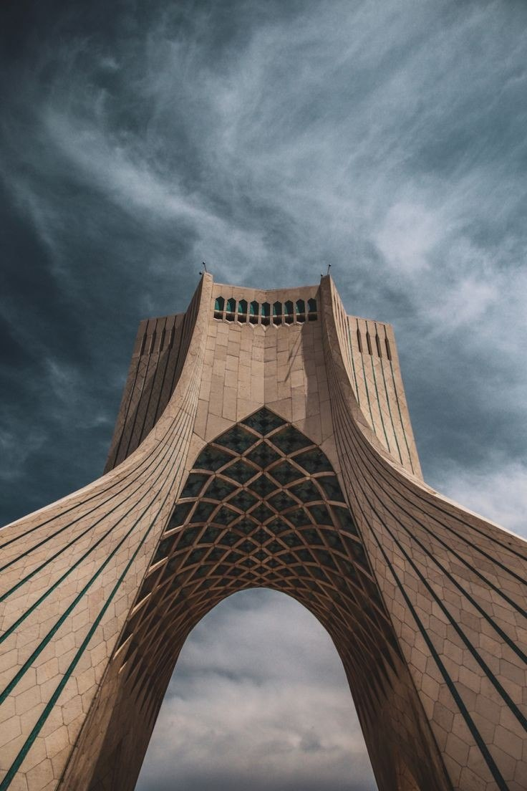

Where is Iran?
A country in the Middle East
The country is a neighbor of Turkey, Azerbaijan, Armenia, Iraq, Pakistan, Afghanistan and Turkmenistan. Iran consists of 31 administrative regions called “ostan”. Tehran is the capital city of Iran. Persian is the official language of the Iranian nation. Other than Persian, the official language in the country is also spoken in Arabic, Turkish, Iranian Azeri and Armenian. The majority of the Iranian population is Shiite Muslims. Moreover, Iran is a Muslim country. The best time to visit Iran is April, May or September, October. There are direct and transfer flights to Iran from Istanbul and Ankara every day of the week.